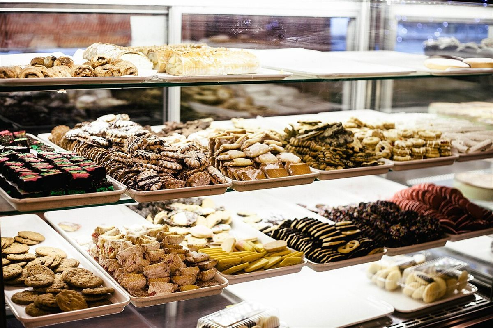
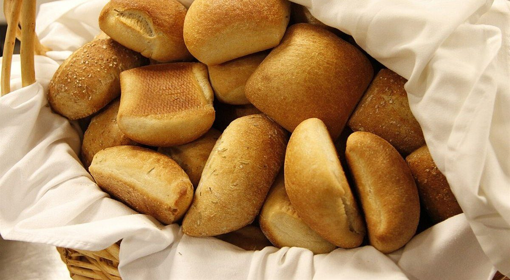

第二層 / 五層のうち
メニュー
メニューと価格は準備中です。確認でき次第、こちらに掲載します。
| メニュー | 準備中 |
|---|---|
| 価格 | 準備中 |
| ご予約 | 準備中 |
鬼皮は、栗の堅い茶色の外皮のこと。ここでは「堅い外側」にあたる情報の見出しだけを置いています。実際の品書きや提供内容は何も決めていません。
掲載欄(内容は確定していません)
品書きの置き場
- パン準備中
- ドリンク準備中
- 甘いもの準備中
上の見出しはページの枠組みの例で、提供の有無を示すものではありません。
雰囲気のイメージ
茶色の艶、いろいろ。
下の写真はパンやカフェの雰囲気を伝えるためのフリー素材で、お店で提供しているものではありません。



